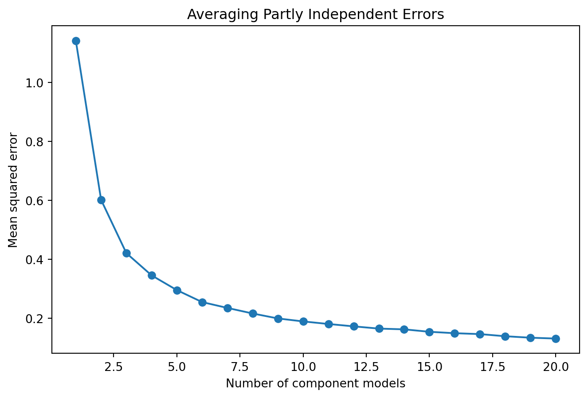
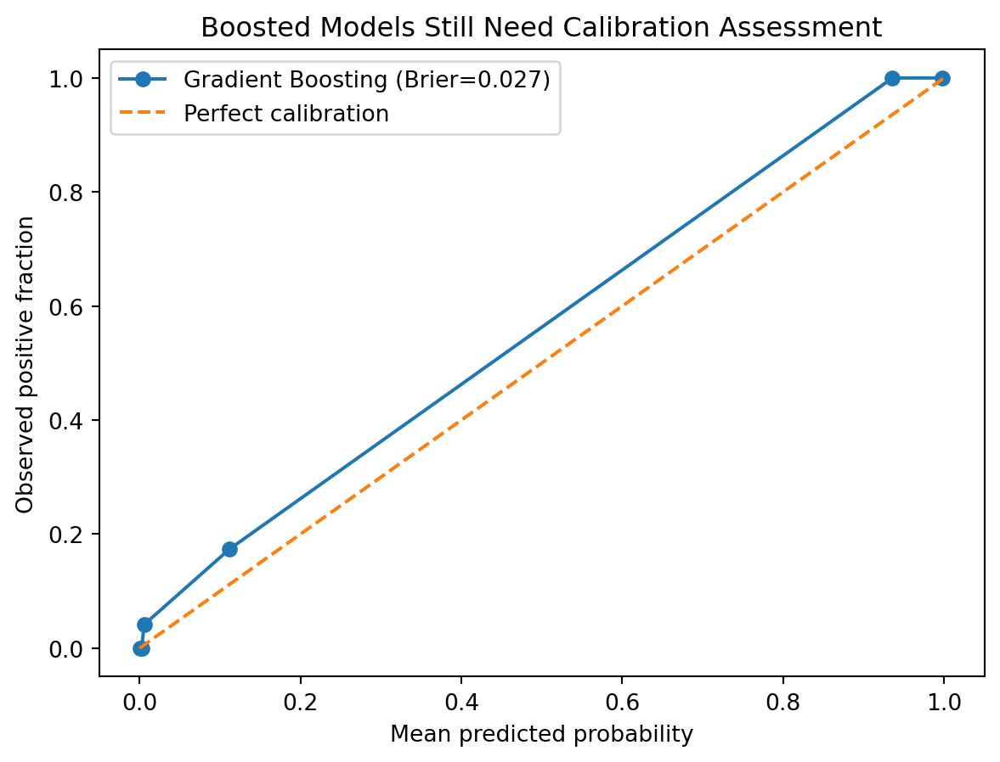

10Ensemble Learning: From Many Models to Stronger Predictions
10.1 Learning Objectives
By the end of this chapter, you should be able to:
explain why combining models can improve predictive performance;
distinguish bagging, boosting, voting, and stacking;
connect bagging to variance reduction and Random Forests;
explain AdaBoost as sequential reweighting of difficult observations;
derive the central intuition of gradient boosting as functional optimization;
explain learning rate, tree depth, and number of estimators as interacting complexity controls;
fit AdaBoost, Gradient Boosting, and HistGradientBoosting models;
compare ensemble methods using leakage-safe evaluation;
explain why boosting can overfit or amplify problematic signal;
distinguish hard voting from soft voting;
explain stacking and the need for out-of-fold meta-features;
compare ensemble performance with simpler baselines;
evaluate ensemble predictions using discrimination, calibration, and task-relevant metrics;
distinguish predictive gains from scientific explanation;
reason about diversity, correlated errors, and collective failure.
compare simple and ensemble models on a reproducible computer-vision benchmark without treating the leaderboard as the research contribution.
10.2 Why This Matters
Chapter 8 introduced one of machine learning’s most powerful ideas: a collection of unstable trees can become a strong predictor when their errors are averaged.
Ensemble learning generalizes that idea.
Instead of asking
Which single model should win?
we can ask
Can several models contribute different useful information to one prediction system?
Sometimes the answer is yes. But combining models is not automatically beneficial. If every model learns the same bias, uses the same leaked feature, or fails on the same subgroup, aggregation can make the system confidently wrong.
ImportantCentral Question
When does combining imperfect learners create a stronger predictive system—and when does collective agreement merely reinforce shared error?
For classification, we might average class probabilities or combine class votes.
The benefit depends partly on whether the models make different errors.
If every model makes exactly the same mistake, averaging does not remove it.
10.4 Four Major Ensemble Strategies
10.4.1 Bagging
Fit models largely independently on resampled data, then aggregate.
Primary intuition:
\[
\boxed{\text{variance reduction}}.
\]
10.4.2 Boosting
Fit learners sequentially so later learners focus on what the current ensemble has not handled well.
Primary intuition:
\[
\boxed{\text{sequential error correction}}.
\]
10.4.3 Voting
Combine predictions from different fitted model families.
Primary intuition:
\[
\boxed{\text{consensus across models}}.
\]
10.4.4 Stacking: Learn the Combination Rule
Train a meta-model to learn how to combine base-model predictions.
Primary intuition:
\[
\boxed{\text{learn the combination rule}}.
\]
10.5 Bagging Revisited
Bagging combines predictors trained on bootstrap samples to reduce variance (Breiman 1996). Random Forests extend this principle with randomized feature selection (Breiman 2001).
For bootstrap models \(\hat f^{(1)},\ldots,\hat f^{(B)}\),
where \(\rho\) represents average error correlation.
As \(M\) increases, the second term shrinks. The first does not.
If \(\rho\) is large, adding more similar models produces diminishing returns.
10.7 Boosting: Learn From What Is Still Wrong
Boosting does not fit all learners independently.
It builds an additive model:
\[
F_M(x)
=
\sum_{m=1}^{M}\alpha_m h_m(x),
\]
where \(h_m(x)\) is a weak learner and \(\alpha_m\) controls its contribution.
Each stage attempts to improve the current ensemble.
10.8 AdaBoost
AdaBoost increases attention to observations that previous learners classified incorrectly, building on the adaptive boosting framework developed by Freund and Schapire (Freund and Schapire 1997).
Gradient boosting is not a single implementation. Modern libraries share the core idea of sequentially improving an ensemble, but differ in how they construct trees, represent features, handle categories, regularize learning, and scale computation.
A useful conceptual map is:
Ecosystem
Distinguishing emphasis
Typical reason to encounter it
scikit-learn HistGradientBoosting
native scikit-learn workflow and histogram-based efficiency
A paper that compares XGBoost, LightGBM, CatBoost, and another gradient booster has not necessarily compared four fundamentally different scientific ideas.
If the research contribution rests only on which library wins on one dataset, ask what generalizable knowledge the comparison produces.
10.18 Boosting and Overfitting
Boosting is powerful but not invulnerable.
Potential controls include:
learning rate;
number of stages;
tree depth;
leaf size;
subsampling;
regularization;
early stopping where supported.
The central principle remains:
Complexity should be chosen using validation evidence, not final-test experimentation.
This is a demonstration, not a proper final model-selection experiment. Chapter 16 will formalize repeated resampling, tuning, comparison uncertainty, and final evaluation.
A voting ensemble is useful only if its components add complementary information.
10.22 Stacking
Stacking uses predictions from base models as inputs to a meta-model, following the stacked-generalization framework introduced by Wolpert (Wolpert 1992).
Conceptually,
\[
X
\rightarrow
\begin{bmatrix}
\hat f_1(X)\\
\hat f_2(X)\\
\vdots\\
\hat f_M(X)
\end{bmatrix}
\rightarrow
g(\cdot)
\rightarrow
\hat y.
\]
The meta-model \(g\) learns how to combine base-model outputs.
10.22.1 The Leakage Danger
If base models predict the same observations they were trained on, the meta-model receives unrealistically optimistic features.
Proper stacking therefore uses out-of-fold predictions for training the meta-model.
The cross-validation parameter controls how predictions used to train the final estimator are generated.
10.24 Diversity: More Than Different Algorithm Names
An ensemble of logistic regression, Random Forest, and boosting sounds diverse.
But algorithm labels do not guarantee meaningful diversity.
Models may still share:
the same leakage;
the same target-definition error;
the same missing population;
the same measurement bias;
the same proxy variables;
the same distribution shift.
True ensemble diversity concerns error structure, not merely model branding.
10.25 Visual Experiment: When Averaging Helps
rng=np.random.default_rng(7)n=1000true=np.zeros(n)shared=rng.normal(0,1,n)independent_errors=[0.3*shared + rng.normal(0,1,n)for _ inrange(20)]ensemble_sizes=range(1,21)mse=[]for m in ensemble_sizes: avg=np.mean(independent_errors[:m],axis=0) mse.append(np.mean((true-avg)**2))plt.figure(figsize=(8,5))plt.plot(list(ensemble_sizes),mse,marker="o")plt.xlabel("Number of component models")plt.ylabel("Mean squared error")plt.title("Averaging Partly Independent Errors")plt.show()

Figure 10.2: Averaging reduces error most effectively when component errors are not perfectly correlated.
The remaining shared component illustrates why correlated error does not disappear simply by adding models.
10.26 Calibration Still Matters
An ensemble can have excellent discrimination and poor calibration. Calibration should therefore be evaluated separately when probabilities matter (Niculescu-Mizil and Caruana 2005).
If probabilities drive decisions, evaluate calibration just as in Chapter 7.
from sklearn.calibration import calibration_curvefrom sklearn.metrics import brier_score_lossfraction_positive,mean_predicted=calibration_curve( y_test,gb_prob,n_bins=6,strategy="quantile")brier=brier_score_loss(y_test,gb_prob)plt.figure(figsize=(7,5))plt.plot( mean_predicted, fraction_positive, marker="o", label=f"Gradient Boosting (Brier={brier:.3f})")plt.plot([0,1],[0,1],linestyle="--",label="Perfect calibration")plt.xlabel("Mean predicted probability")plt.ylabel("Observed positive fraction")plt.title("Boosted Models Still Need Calibration Assessment")plt.legend()plt.show()

10.27 Feature Importance Returns—With the Same Warning
Tree-based boosting can provide feature-importance measures. Permutation importance can also be used.
The highest accuracy is not automatically the best scientific or operational choice.
Ask:
How stable is the ranking under another split or repeated resampling?
Which errors differ by digit class?
How much more compute does the more complex model require?
Are probability estimates needed?
Which representation assumptions differ?
Would the ranking survive visual domain shift?
What new knowledge does the comparison produce?
ImportantResearch Reality Check
“Model A achieved the highest accuracy on handwritten digits” is a result.
By itself, it is not yet a meaningful research contribution.
A publishable study needs a substantive or methodological question whose answer extends beyond the leaderboard.
10.29 Three Tracks
10.29.1 Health Track
Boosting can capture nonlinearities and interactions among health measurements. Evaluate calibration, external validity, subgroup performance, and whether difficult observations reflect rare but important cases or data-quality problems.
10.29.2 Education Track
An ensemble may improve early-warning predictions, but combining models does not resolve questions about intervention capacity, student labeling, temporal leakage, or whether predictive features are actionable.
10.29.3 Open ML Benchmark Track
Benchmark datasets allow controlled comparison of bagging, boosting, voting, and stacking while manipulating noise, class overlap, redundant features, and component-model diversity.
10.30 Beyond the Algorithm: When Does the Crowd Become Wise?
NoteAgreement Is Not the Same as Truth
Ensemble learning resembles a broader idea: multiple imperfect judgments can sometimes outperform a single judgment.
But collective intelligence depends on conditions.
If members of the ensemble bring partly independent information, aggregation can cancel some individual errors.
If they all inherit the same flawed evidence, aggregation can reinforce the flaw.
A thousand models trained on leaked data do not create trustworthy evidence.
A hundred models trained on a systematically unrepresentative population do not create external validity.
Ten algorithms using the same proxy for an unmeasured construct do not create causal understanding.
The lesson extends beyond machine learning:
Diversity of voices matters only when it creates diversity of information and error.
The right question is not:
“How many models agree?”
It is:
“Why do they agree, where do their errors differ, and what assumptions do they share?”
10.31 AI Pair Programmer: Build Me the Ultimate Ensemble
Ask an AI assistant to combine every available classifier into one large ensemble.
Audit whether it asks:
whether component errors are complementary;
whether all models were evaluated on the same valid split;
whether uncertainty in the performance difference is known.
Then redesign the ensemble to be simpler and evidence-driven.
10.32 Hands-On Lab: Bagging to Stacking
Using a classification dataset:
complete the Problem Framing Canvas;
complete the Feature Ledger;
establish a simple baseline;
fit logistic regression;
fit a single decision tree;
fit Random Forest;
fit AdaBoost;
fit Gradient Boosting;
compare discrimination;
inspect calibration for probability-producing models;
build a soft-voting ensemble;
build a stacking ensemble with out-of-fold meta-features;
compare performance and computational cost;
determine whether ensemble complexity earns its place;
identify shared failure modes;
document unsupported causal claims.
10.33 Practitioner Track
A practitioner should be able to choose among bagging, boosting, voting, and stacking; control ensemble complexity; prevent stacking leakage; justify added computational cost with validated gains; and treat library choice as an engineering and validation decision rather than a popularity contest.
10.34 Researcher Track
A researcher should additionally investigate uncertainty, calibration, stability, external validity, shared biases among component models, whether ensemble gains support prediction only or a broader scientific claim, distinguish comparison of algorithmic principles from comparison of software implementations; and document implementation versions, important hyperparameters, seeds, and evaluation design.
10.35 Research Studio
Design an ensemble study in health, education, or a benchmark domain.
Specify:
target and prediction time;
baseline;
candidate component models;
reason each model may contribute complementary structure;
bagging or boosting rationale;
voting or stacking rationale;
leakage-safe meta-learning strategy;
tuning strategy;
validation design;
discrimination and/or regression metrics;
calibration requirement;
computational constraints;
error-correlation analysis;
external validation;
interpretive limitations;
potential conference or journal contribution.
10.36 Professor’s Challenge: The 12-Model Super Ensemble
A team trains 12 classifiers. Every model uses the same dataset and feature set. Hyperparameters are selected using the test set. The five highest-scoring models are stacked using their predictions on the same training observations used to fit them.
The resulting ensemble improves test AUC from .91 to .925.
The authors conclude:
“The ensemble’s agreement across diverse algorithms demonstrates robustness, eliminates model bias, and provides stronger evidence that the top-ranked features cause the outcome.”
Critique:
test-set tuning;
selection bias;
stacking leakage;
magnitude and uncertainty of the apparent improvement;
algorithm diversity versus error diversity;
shared data and measurement bias;
calibration;
external validity;
causal claims;
feature importance;
computational complexity;
whether .015 AUC improvement is operationally meaningful.
Redesign the experiment.
10.37 Knowledge Check
What is ensemble learning?
Why can averaging reduce variance?
Why does correlated error limit ensemble gains?
How does bagging differ from boosting?
How does AdaBoost respond to misclassified observations?
What does the AdaBoost learner weight represent conceptually?
What are pseudo-residuals in gradient boosting?
Why is gradient boosting described as optimization in function space?
What does learning rate control?
Why do learning rate and number of estimators interact?
How does hard voting differ from soft voting?
What assumption makes soft voting meaningful?
What is stacking?
Why must meta-model training use out-of-fold predictions?
Why do different algorithm names not guarantee useful diversity?
Why can boosting amplify data problems?
Why does ensemble performance not establish causal explanation?
What conditions make a “crowd” of models genuinely useful?
What ideas do modern boosting libraries share?
Why is comparing software packages not automatically equivalent to comparing fundamentally different algorithms?
What data and operational characteristics can make one boosting implementation more suitable than another?
10.38 Reproducibility Check
Record:
problem specification;
feature ledger;
baseline;
component estimators;
preprocessing for each component;
bootstrap settings;
number of estimators;
learning rates;
tree complexity;
subsampling settings;
voting weights;
stacking folds and meta-model;
hyperparameter search boundaries;
calibration assessment;
evaluation metrics;
random seeds;
computational environment;
training time where relevant;
package versions;
final test boundary;
all code generating reported results.
10.39 Key Takeaways
Ensembles combine multiple models to improve prediction or stability.
Bagging primarily reduces variance through aggregation.
Random Forests improve bagging by reducing correlation among trees.
Gradient boosting fits learners to negative loss gradients.
Learning rate and ensemble size jointly control boosting behavior.
Hard voting combines labels; soft voting combines probability estimates.
Stacking learns a combination rule from out-of-fold base-model predictions.
Algorithm diversity is not the same as error diversity.
Shared leakage and shared bias survive aggregation.
Ensembles still require calibration, validation, and external-validity analysis.
More models do not automatically mean more trustworthy evidence.
Ensemble complexity should earn its place through meaningful, reproducible improvement.
Modern boosting systems share a common algorithmic lineage while differing in important implementation choices.
Package-level performance comparisons require careful validation and should produce insight beyond a leaderboard.
10.40 Looking Ahead
Chapters 6–10 assumed that labeled outcomes were available for supervised learning. Chapter 11 removes that assumption and begins unsupervised learning, asking a different question: when no target label is supplied, what structure can the data reveal—and how do we determine whether that apparent structure is meaningful rather than an artifact of representation or method?
Chen, Tianqi, and Carlos Guestrin. 2016. “XGBoost: A Scalable Tree Boosting System.” In Proceedings of the 22nd ACM SIGKDD International Conference on Knowledge Discovery and Data Mining, 785–94. Association for Computing Machinery. https://doi.org/10.1145/2939672.2939785.
Freund, Yoav, and Robert E. Schapire. 1997. “A Decision-Theoretic Generalization of on-Line Learning and an Application to Boosting.”Journal of Computer and System Sciences 55 (1): 119–39. https://doi.org/10.1006/jcss.1997.1504.
Friedman, Jerome H. 2001. “Greedy Function Approximation: A Gradient Boosting Machine.”The Annals of Statistics 29 (5): 1189–1232. https://doi.org/10.1214/aos/1013203451.
Ke, Guolin, Qi Meng, Thomas Finley, Taifeng Wang, Wei Chen, Weidong Ma, Qiwei Ye, and Tie-Yan Liu. 2017. “LightGBM: A Highly Efficient Gradient Boosting Decision Tree.” In Advances in Neural Information Processing Systems. Vol. 30.
Niculescu-Mizil, Alexandru, and Rich Caruana. 2005. “Predicting Good Probabilities with Supervised Learning.” In Proceedings of the 22nd International Conference on Machine Learning, 625–32. Association for Computing Machinery. https://doi.org/10.1145/1102351.1102430.
Prokhorenkova, Liudmila, Gleb Gusev, Aleksandr Vorobev, Anna Veronika Dorogush, and Andrey Gulin. 2018. “CatBoost: Unbiased Boosting with Categorical Features.” In Advances in Neural Information Processing Systems. Vol. 31.